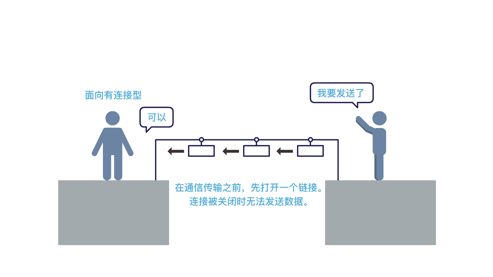
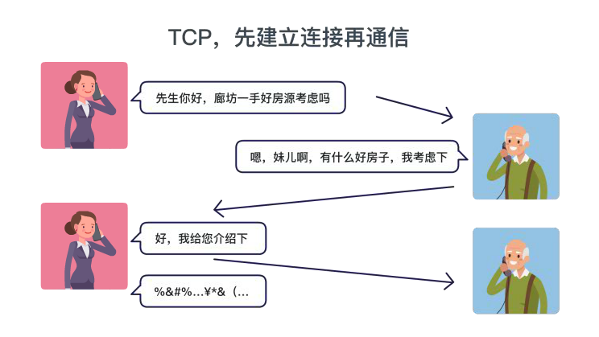
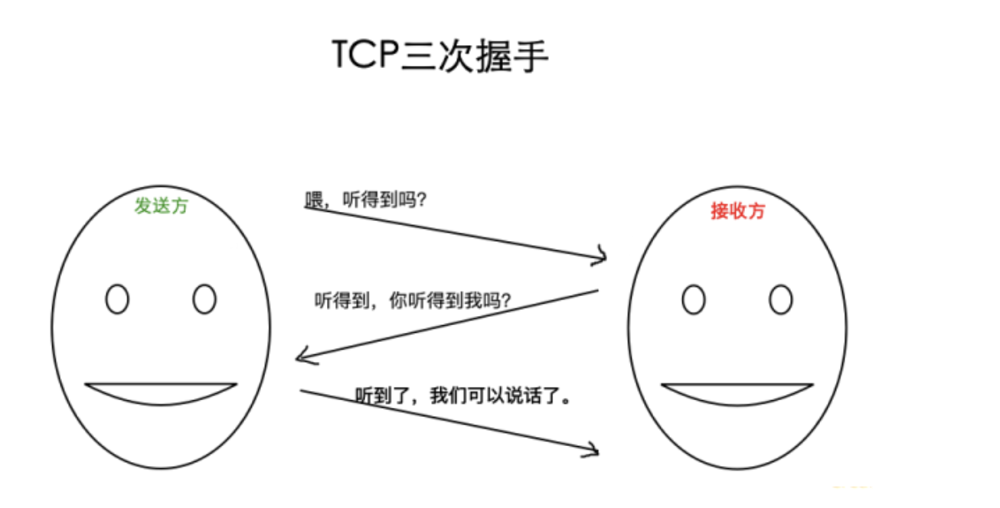
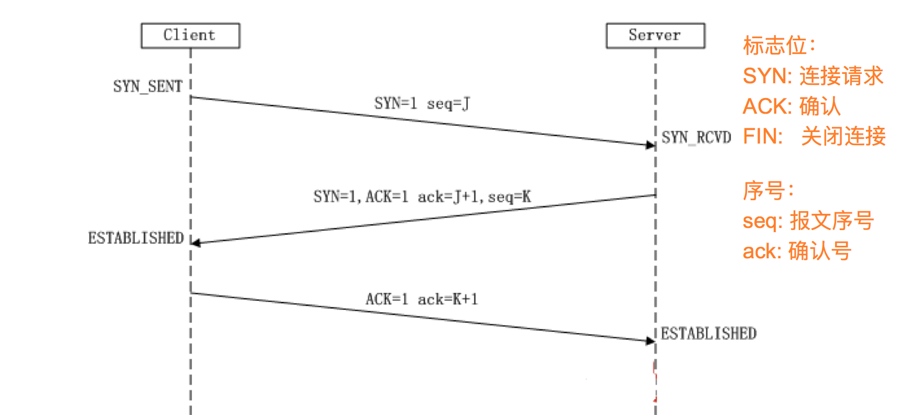
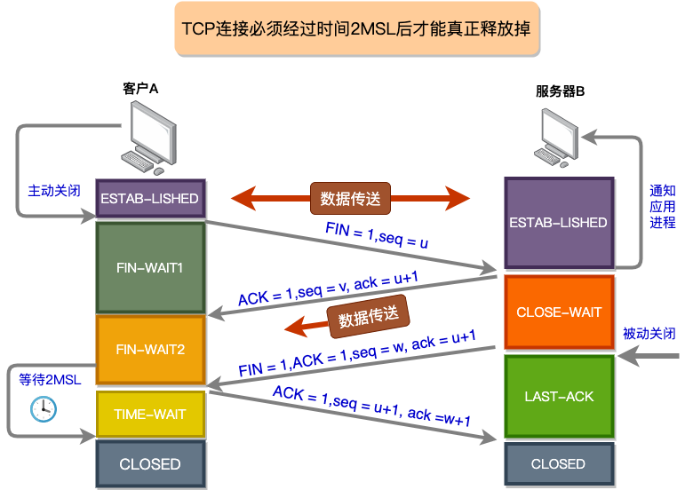
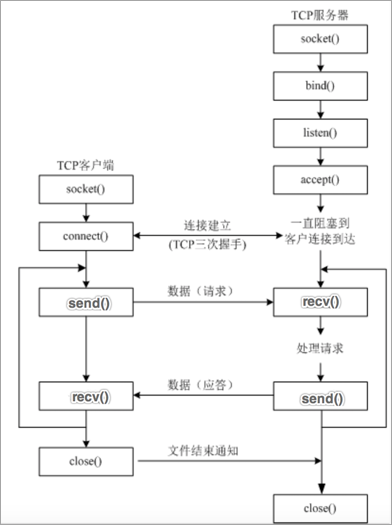

<!DOCTYPE lake>
<h2 data-lake-id="S7sgw" id="S7sgw"><span data-lake-id="u94e4dc7e" id="u94e4dc7e" style="color: rgba(0, 0, 0, 0.87)">TCP 的概念</span></h2><p data-lake-id="ub61212f8" id="ub61212f8"><span data-lake-id="ufd0bb79e" id="ufd0bb79e" style="color: rgba(0, 0, 0, 0.87)">之前我们学习了 IP 地址和端口号，</span><span data-lake-id="u4c75d03b" id="u4c75d03b">网络应用程序之间进行通信时，</span><span data-lake-id="u7277cd19" id="u7277cd19" style="color: rgba(0, 0, 0, 0.87)">通过 IP 地址能够找到对应的设备，然后再通过端口号找到对应的端口，再通过端口把数据传输给应用程序，</span><strong><span data-lake-id="ua87bba75" id="ua87bba75" style="color: rgba(0, 0, 0, 0.87)">这里要注意，数据不能随便发送，在发送之前还需要选择一个对应的传输协议，保证程序之间按照指定的传输规则进行数据的通信， </span></strong><span data-lake-id="u02a27499" id="u02a27499" style="color: rgba(0, 0, 0, 0.87)">而这个传输协议就是我们今天学习的 TCP。</span></p><p data-lake-id="u5a2c695f" id="u5a2c695f"><br/></p><p data-lake-id="u16807a66" id="u16807a66"><span data-lake-id="u73c4d2ff" id="u73c4d2ff" style="color: rgba(0, 0, 0, 0.87)">TCP 的英文全拼(Transmission Control Protocol)简称</span><strong><span data-lake-id="u801772e6" id="u801772e6" style="color: rgba(0, 0, 0, 0.87)">传输控制协议</span></strong><span data-lake-id="ue079f7b9" id="ue079f7b9" style="color: rgba(0, 0, 0, 0.87)">，它是一种</span><strong><span data-lake-id="u9b60a10f" id="u9b60a10f" style="color: rgba(0, 0, 0, 0.87)">面向连接的、可靠的、基于字节流的传输层通信协议</span></strong><span data-lake-id="u66643a98" id="u66643a98" style="color: rgba(0, 0, 0, 0.87)">。</span></p><p data-lake-id="u575e79d2" id="u575e79d2"><span data-lake-id="u587ceab0" id="u587ceab0" style="color: rgba(0, 0, 0, 0.87)">​</span><br/></p><p data-lake-id="ub5b95c93" id="ub5b95c93"><span data-lake-id="u78a6a6e4" id="u78a6a6e4">TCP通信需要经过</span><strong><span data-lake-id="ua09309c6" id="ua09309c6">创建连接</span></strong><span data-lake-id="ucd9d00d9" id="ucd9d00d9">、</span><strong><span data-lake-id="u122b22a9" id="u122b22a9">数据传送</span></strong><span data-lake-id="u9f98af16" id="u9f98af16">、</span><strong><span data-lake-id="uf780223e" id="uf780223e">终止连接</span></strong><span data-lake-id="u003cd111" id="u003cd111">三个步骤。</span></p><p data-lake-id="ueeadf694" id="ueeadf694"></p><p data-lake-id="u9ae842c8" id="u9ae842c8"><br/></p><p data-lake-id="u71b3e8c9" id="u71b3e8c9"><span data-lake-id="udac244aa" id="udac244aa">TCP通信模型中，在通信开始之前，一定要先建立相关的链接，才能发送数据，类似于生活中，打电话</span></p><p data-lake-id="u68ba14cc" id="u68ba14cc"></p><p data-lake-id="u4ef57e5a" id="u4ef57e5a"></p><h2 data-lake-id="bHl56" id="bHl56"><span data-lake-id="u6132f9c2" id="u6132f9c2" style="color: rgba(0, 0, 0, 0.87)">TCP特点</span></h2><h3 data-lake-id="Z6kxX" id="Z6kxX"><span data-lake-id="u50af0bc6" id="u50af0bc6" style="color: rgba(0, 0, 0, 0.87)">面向连接</span></h3><p data-lake-id="u405cc469" id="u405cc469"><span data-lake-id="uf0cf6d80" id="uf0cf6d80" style="color: rgba(0, 0, 0, 0.87)">通信双方必须先建立连接才能进行数据的传输，双方都必须为该连接分配必要的系统内核资源，以管理连接的状态和连接上的传输。</span></p><p data-lake-id="ud2d7e162" id="ud2d7e162"><span data-lake-id="uafcac725" id="uafcac725" style="color: rgba(0, 0, 0, 0.87)">双方间的数据传输都可以通过这一个连接进行。完成数据交换后，双方必须断开此连接，以释放系统资源。</span></p><p data-lake-id="u711a207f" id="u711a207f"><span data-lake-id="u6c9e03a8" id="u6c9e03a8" style="color: rgba(0, 0, 0, 0.87)">这种连接是一对一的，</span><strong><span data-lake-id="u6785936c" id="u6785936c" style="color: rgba(0, 0, 0, 0.87)">因此TCP不适用于广播的应用程序，基于广播的应用程序请使用UDP协议。</span></strong></p><h3 data-lake-id="hVJcP" id="hVJcP"><span data-lake-id="u8deff05e" id="u8deff05e" style="color: rgba(0, 0, 0, 0.87)">可靠传输</span></h3><ol list="u6d720116"><li data-lake-id="u283581f0" fid="u8137fb94" id="u283581f0"><strong><span data-lake-id="uc084789c" id="uc084789c" style="color: rgba(0, 0, 0, 0.87)">TCP采用发送应答机制：</span></strong><span data-lake-id="u18592f9f" id="u18592f9f" style="color: rgba(0, 0, 0, 0.87)">TCP发送的每个报文段都必须得到接收方的应答才认为这个TCP报文段传输成功</span></li><li data-lake-id="ua4662abd" fid="u8137fb94" id="ua4662abd"><strong><span data-lake-id="ub1896505" id="ub1896505" style="color: rgba(0, 0, 0, 0.87)">超时重传：</span></strong><span data-lake-id="u34a903d7" id="u34a903d7" style="color: rgba(0, 0, 0, 0.87)">发送端发出一个报文段之后就启动定时器，如果在定时时间内没有收到应答就重新发送这个报文段。</span></li><li data-lake-id="u891fd661" fid="u8137fb94" id="u891fd661"><strong><span data-lake-id="u11090f8e" id="u11090f8e" style="color: rgba(0, 0, 0, 0.87)">错误校验：</span></strong><span data-lake-id="u68409c4f" id="u68409c4f" style="color: rgba(0, 0, 0, 0.87)">TCP用一个校验和函数来检验数据是否有错误；在发送和接收时都要计算校验和。</span></li><li data-lake-id="uda2e02c4" fid="u8137fb94" id="uda2e02c4"><strong><span data-lake-id="u672cecf1" id="u672cecf1" style="color: rgba(0, 0, 0, 0.87)">流量控制和阻塞管理：</span></strong><span data-lake-id="uaff765cd" id="uaff765cd" style="color: rgba(0, 0, 0, 0.87)">流量控制用来避免主机发送得过快而使接收方来不及完全收下。</span></li></ol><p data-lake-id="u6990b052" id="u6990b052"><br/></p><p data-lake-id="u922bc516" id="u922bc516"><span data-lake-id="u833bb997" id="u833bb997" style="color: rgba(0, 0, 0, 0.87)">总而言之：TCP 是一个</span><strong><span data-lake-id="u6e7a3624" id="u6e7a3624" style="color: rgba(0, 0, 0, 0.87)">稳定、可靠的传输协议，常用于对数据进行准确无误的传输，比如: 文件下载，浏览器上网</span></strong><span data-lake-id="u2d7b4c13" id="u2d7b4c13" style="color: rgba(0, 0, 0, 0.87)">。</span></p><h2 data-lake-id="bVCCo" id="bVCCo"><span data-lake-id="ue89b1629" id="ue89b1629" style="color: rgba(0, 0, 0, 0.87)">TCP拓展知识</span></h2><h3 data-lake-id="EDeTS" id="EDeTS"><span data-lake-id="uc08cb550" id="uc08cb550" style="color: rgba(0, 0, 0, 0.87)">TCP的三次握手</span></h3><p data-lake-id="u6bec1c10" id="u6bec1c10"><span data-lake-id="ubd75d02d" id="ubd75d02d" style="color: rgba(0, 0, 0, 0.87)">所谓三次握手（Three-Way Handshake）即</span><strong><span data-lake-id="u6fda84e0" id="u6fda84e0" style="color: rgba(0, 0, 0, 0.87)">建立TCP连接</span></strong><span data-lake-id="ua1ef8e49" id="ua1ef8e49" style="color: rgba(0, 0, 0, 0.87)">，就是指建立一个TCP连接时，需要客户端和服务端总共发送3个包以确认连接的建立。在socket编程中，这一过程由客户端执行connect来触发</span></p><p data-lake-id="ub25a08a3" id="ub25a08a3"></p><p data-lake-id="u5ef935cd" id="u5ef935cd"><span data-lake-id="ubd6b4f4c" id="ubd6b4f4c" style="color: rgba(0, 0, 0, 0.87)">整个流程如下图所示：</span></p><p data-lake-id="u1163f381" id="u1163f381"></p><p data-lake-id="u25ecc80b" id="u25ecc80b"><span data-lake-id="u6d6cffd0" id="u6d6cffd0" style="color: rgba(0, 0, 0, 0.87)">（1）第一次握手：客户端将数据包发送给Server，</span><strong><span data-lake-id="uc72b0f79" id="uc72b0f79" style="color: rgba(0, 0, 0, 0.87)">等待Server确认</span></strong><span data-lake-id="u8d522310" id="u8d522310" style="color: rgba(0, 0, 0, 0.87)">。</span></p><p data-lake-id="u4a0bdbfe" id="u4a0bdbfe"><span data-lake-id="u5e10e80a" id="u5e10e80a" style="color: rgba(0, 0, 0, 0.87)">（2）第二次握手：Server收到数据包后</span><strong><span data-lake-id="uf4ab8b52" id="uf4ab8b52" style="color: rgba(0, 0, 0, 0.87)">知道Client请求建立连接</span></strong><span data-lake-id="ud3544bcf" id="ud3544bcf" style="color: rgba(0, 0, 0, 0.87)">，发送</span><strong><span data-lake-id="u7bcb4b85" id="u7bcb4b85" style="color: rgba(0, 0, 0, 0.87)">数据包发送给Client以确认连接请求</span></strong><span data-lake-id="u89073d7d" id="u89073d7d" style="color: rgba(0, 0, 0, 0.87)">。</span></p><p data-lake-id="u637ff4b9" id="u637ff4b9"><span data-lake-id="u11e19bd6" id="u11e19bd6" style="color: rgba(0, 0, 0, 0.87)">（3）第三次握手：</span><strong><span data-lake-id="uf887d17a" id="uf887d17a" style="color: rgba(0, 0, 0, 0.87)">Client收到确认后</span></strong><span data-lake-id="u186adf10" id="u186adf10" style="color: rgba(0, 0, 0, 0.87)">，</span><strong><span data-lake-id="ud1156201" id="ud1156201" style="color: rgba(0, 0, 0, 0.87)">发送数据包发送给Server</span></strong><span data-lake-id="ud4b32be8" id="ud4b32be8" style="color: rgba(0, 0, 0, 0.87)">，Server检查数据包，如果正确则连接建立成功，完成三次握手，随后Client与Server之间可以开始传输数据了。</span></p><h3 data-lake-id="nIgqQ" id="nIgqQ"><span data-lake-id="uc03536ed" id="uc03536ed" style="color: rgba(0, 0, 0, 0.87)">TCP的四次挥手</span></h3><p data-lake-id="ufd433091" id="ufd433091"><span data-lake-id="ub33fb9d6" id="ub33fb9d6" style="color: rgba(0, 0, 0, 0.87)">TCP的4次挥手，主要是说TCP断开链接的时候需要经过4次确认.</span></p><p data-lake-id="uda5248f8" id="uda5248f8"></p><p data-lake-id="ua6e9774f" id="ua6e9774f"><strong><span data-lake-id="u032e9776" id="u032e9776" style="color: rgba(0, 0, 0, 0.87)">第一次挥手：</span></strong><span data-lake-id="u7c39810a" id="u7c39810a" style="color: rgba(0, 0, 0, 0.87)"> </span><span data-lake-id="u9dcadf1f" id="u9dcadf1f" style="color: rgba(0, 0, 0, 0.87)">主机1（可以是客户端，也可以是服务器端）向主机2发送一个</span><span data-lake-id="u3c612c8d" id="u3c612c8d" style="color: var(--md-code-fg-color)">FIN</span><span data-lake-id="u6a355b0b" id="u6a355b0b" style="color: rgba(0, 0, 0, 0.87)">报文段；此时，主机1进入</span><span data-lake-id="ud753289b" id="ud753289b" style="color: var(--md-code-fg-color)">FIN_WAIT_1</span><span data-lake-id="u7e667ebb" id="u7e667ebb" style="color: rgba(0, 0, 0, 0.87)">状态；这表示主机1没有数据要发送给主机2了；</span></p><p data-lake-id="u21ce5ca5" id="u21ce5ca5"><strong><span data-lake-id="uc6c4a718" id="uc6c4a718" style="color: rgba(0, 0, 0, 0.87)">第二次挥手：</span></strong><span data-lake-id="u7566312c" id="u7566312c" style="color: rgba(0, 0, 0, 0.87)"> </span><span data-lake-id="u4f83103e" id="u4f83103e" style="color: rgba(0, 0, 0, 0.87)">主机2收到了主机1发送的</span><span data-lake-id="u7324b1e9" id="u7324b1e9" style="color: var(--md-code-fg-color)">FIN</span><span data-lake-id="u64aa02fd" id="u64aa02fd" style="color: rgba(0, 0, 0, 0.87)">报文段，向主机1回一个</span><span data-lake-id="u06a07e22" id="u06a07e22" style="color: var(--md-code-fg-color)">ACK</span><span data-lake-id="ufe060595" id="ufe060595" style="color: rgba(0, 0, 0, 0.87)">报文段告诉主机1，我也没有数据要发送了，可以进行关闭连接了；</span></p><p data-lake-id="u67288844" id="u67288844"><strong><span data-lake-id="ud61bd138" id="ud61bd138" style="color: rgba(0, 0, 0, 0.87)">第三次挥手：</span></strong><span data-lake-id="u9977651c" id="u9977651c" style="color: rgba(0, 0, 0, 0.87)"> </span><span data-lake-id="u9d128e7c" id="u9d128e7c" style="color: rgba(0, 0, 0, 0.87)">主机2向主机1发送</span><span data-lake-id="u732a4dc9" id="u732a4dc9" style="color: var(--md-code-fg-color)">FIN</span><span data-lake-id="u0a3aa341" id="u0a3aa341" style="color: rgba(0, 0, 0, 0.87)">报文段，请求关闭连接，同时主机2进入</span><span data-lake-id="u9cdb8a1c" id="u9cdb8a1c" style="color: var(--md-code-fg-color)">CLOSE_WAIT</span><span data-lake-id="u66c42db3" id="u66c42db3" style="color: rgba(0, 0, 0, 0.87)">状态；</span></p><p data-lake-id="uca29ffa7" id="uca29ffa7"><strong><span data-lake-id="ucf0b0cb3" id="ucf0b0cb3" style="color: rgba(0, 0, 0, 0.87)">第四次挥手：</span></strong><span data-lake-id="u332c0210" id="u332c0210" style="color: rgba(0, 0, 0, 0.87)"> </span><span data-lake-id="ue602740d" id="ue602740d" style="color: rgba(0, 0, 0, 0.87)">主机1收到主机2发送的</span><span data-lake-id="uf992ef71" id="uf992ef71" style="color: var(--md-code-fg-color)">FIN</span><span data-lake-id="u8629be7a" id="u8629be7a" style="color: rgba(0, 0, 0, 0.87)">报文段，向主机2发送</span><span data-lake-id="ue5e93de7" id="ue5e93de7" style="color: var(--md-code-fg-color)">ACK</span><span data-lake-id="udac08149" id="udac08149" style="color: rgba(0, 0, 0, 0.87)">报文段；主机2收到主机1的</span><span data-lake-id="u0f633534" id="u0f633534" style="color: var(--md-code-fg-color)">ACK</span><span data-lake-id="u0f4d961b" id="u0f4d961b" style="color: rgba(0, 0, 0, 0.87)">报文段以后，就关闭连接；此时，主机1等待2MSL(Maximum Segment Lifetime 报文最大生存时间)后依然没有收到回复，则证明Server端已正常关闭，那好，主机1也可以关闭连接了。</span></p><p data-lake-id="u7169e668" id="u7169e668"><br/></p><h2 data-lake-id="KsfMu" id="KsfMu"><span data-lake-id="u101098ff" id="u101098ff">TCP网络程序开发流程</span></h2><p data-lake-id="ud0ffc2e5" id="ud0ffc2e5"><span data-lake-id="u209447c3" id="u209447c3" style="color: rgba(0, 0, 0, 0.87)">TCP 网络应用程序开发分为: </span></p><ol list="u0c9d6211"><li data-lake-id="ub79dcf82" fid="uec8c6ecf" id="ub79dcf82"><span data-lake-id="u4b1d2536" id="u4b1d2536" style="color: rgba(0, 0, 0, 0.87)">TCP 客户端程序开发：指运行在</span><strong><span data-lake-id="u35f330de" id="u35f330de" style="color: rgba(0, 0, 0, 0.87)">用户设备上的程序</span></strong></li><li data-lake-id="u48cb307d" fid="uec8c6ecf" id="u48cb307d"><span data-lake-id="u6156cddd" id="u6156cddd" style="color: rgba(0, 0, 0, 0.87)">TCP 服务端程序开发：指运行在</span><strong><span data-lake-id="u083dc0c9" id="u083dc0c9" style="color: rgba(0, 0, 0, 0.87)">服务器设备上的程序，</span></strong><span data-lake-id="u064ee6a0" id="u064ee6a0" style="color: rgba(0, 0, 0, 0.87)">为客户端提供数据服务。</span></li></ol><p data-lake-id="u54951b54" id="u54951b54"><br/></p><p data-lake-id="ua04bc338" id="ua04bc338"></p><h3 data-lake-id="fPxlu" id="fPxlu"><span data-lake-id="u20285180" id="u20285180" style="color: rgba(0, 0, 0, 0.87)">TCP客户端开发流程</span></h3><ol list="u955b73cc"><li data-lake-id="u9eefe45f" fid="u0029297d" id="u9eefe45f"><span data-lake-id="u946d680c" id="u946d680c" style="color: rgba(0, 0, 0, 0.87)">创建客户端套接字对象</span></li><li data-lake-id="u718d8c94" fid="u0029297d" id="u718d8c94"><span data-lake-id="u07574817" id="u07574817" style="color: rgba(0, 0, 0, 0.87)">和服务端套接字建立连接</span></li><li data-lake-id="u5443b5ce" fid="u0029297d" id="u5443b5ce"><span data-lake-id="u74886aa6" id="u74886aa6" style="color: rgba(0, 0, 0, 0.87)">发送数据</span></li><li data-lake-id="ua9a9e51f" fid="u0029297d" id="ua9a9e51f"><span data-lake-id="u5c7909d9" id="u5c7909d9" style="color: rgba(0, 0, 0, 0.87)">接收数据</span></li><li data-lake-id="u22e3baa0" fid="u0029297d" id="u22e3baa0"><span data-lake-id="ua9b3cfbe" id="ua9b3cfbe" style="color: rgba(0, 0, 0, 0.87)">关闭客户端套接字</span></li></ol><h3 data-lake-id="SziIS" id="SziIS"><span data-lake-id="ucc15531d" id="ucc15531d" style="color: rgba(0, 0, 0, 0.87)">TCP服务端开发流程</span></h3><ol list="ub34b6f0e"><li data-lake-id="u700dfcfe" fid="u4527e196" id="u700dfcfe"><span data-lake-id="u14e81d91" id="u14e81d91" style="color: rgba(0, 0, 0, 0.87)">创建服务端端套接字对象</span></li><li data-lake-id="u4520ade6" fid="u4527e196" id="u4520ade6"><span data-lake-id="ueb6e6e65" id="ueb6e6e65" style="color: rgba(0, 0, 0, 0.87)">绑定端口号</span></li><li data-lake-id="uee86bfdc" fid="u4527e196" id="uee86bfdc"><span data-lake-id="ub019c8aa" id="ub019c8aa" style="color: rgba(0, 0, 0, 0.87)">设置监听</span></li><li data-lake-id="ubfd98d4b" fid="u4527e196" id="ubfd98d4b"><span data-lake-id="ubd7798fb" id="ubd7798fb" style="color: rgba(0, 0, 0, 0.87)">等待接受客户端的连接请求</span></li><li data-lake-id="ueab935f2" fid="u4527e196" id="ueab935f2"><span data-lake-id="u2216ec0e" id="u2216ec0e" style="color: rgba(0, 0, 0, 0.87)">接收数据</span></li><li data-lake-id="u2097dfc3" fid="u4527e196" id="u2097dfc3"><span data-lake-id="ufa909e86" id="ufa909e86" style="color: rgba(0, 0, 0, 0.87)">发送数据</span></li><li data-lake-id="ub1793f76" fid="u4527e196" id="ub1793f76"><span data-lake-id="u093b3a98" id="u093b3a98" style="color: rgba(0, 0, 0, 0.87)">关闭套接字</span></li></ol><h3 data-lake-id="KKCEl" id="KKCEl"><span data-lake-id="u7cece1bf" id="u7cece1bf" style="color: rgba(0, 0, 0, 0.87)">小结</span></h3><ul list="u7ee48705"><li data-lake-id="ub24e85bc" fid="u4b76ee10" id="ub24e85bc"><span data-lake-id="udfd01b9b" id="udfd01b9b" style="color: rgba(0, 0, 0, 0.87)">TCP 网络应用程序开发分为</span><strong><span data-lake-id="u414e5368" id="u414e5368" style="color: rgba(0, 0, 0, 0.87)">客户端程序开发</span></strong><span data-lake-id="u50b5da97" id="u50b5da97" style="color: rgba(0, 0, 0, 0.87)">和</span><strong><span data-lake-id="uacea231a" id="uacea231a" style="color: rgba(0, 0, 0, 0.87)">服务端程序开发</span></strong><span data-lake-id="u2ee5e01c" id="u2ee5e01c" style="color: rgba(0, 0, 0, 0.87)">。</span></li><li data-lake-id="u2f8f08a7" fid="u4b76ee10" id="u2f8f08a7"><strong><span data-lake-id="ucce1133b" id="ucce1133b" style="color: rgba(0, 0, 0, 0.87)">主动发起建立连接请求的</span></strong><span data-lake-id="ud9009ed3" id="ud9009ed3" style="color: rgba(0, 0, 0, 0.87)">是客户端程序</span></li><li data-lake-id="uba939cf9" fid="u4b76ee10" id="uba939cf9"><strong><span data-lake-id="u09f58894" id="u09f58894" style="color: rgba(0, 0, 0, 0.87)">等待接受连接请求的</span></strong><span data-lake-id="u582f4952" id="u582f4952" style="color: rgba(0, 0, 0, 0.87)">是服务端程序</span></li></ul>